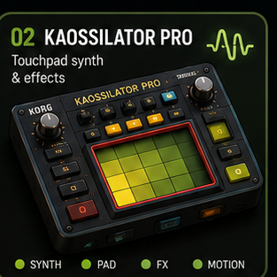

Kaossilator Pro
XY performance page with generated audio, performance controls, and local pad memory.
Layer: XY surface plus local pad memory.
Use: move the XY surface or load local audio to pads.
Input: touch, mouse, keyboard, and MIDI-ready pads.